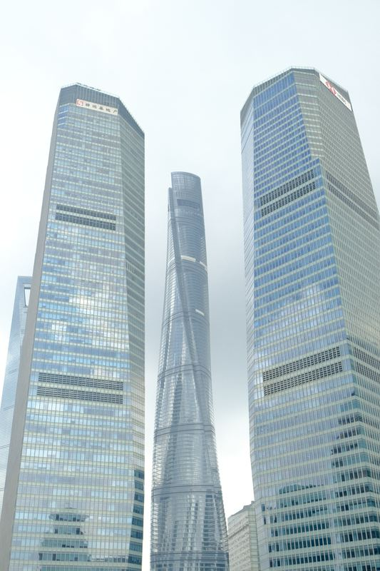

Landscape · Album 09 / 14
The towers in Lujiazui, a quiet tree-lined street, and one of the old water towns outside the city.

 Next albumSydney Go 2026UAVS · around Sydney · 2026 · 9 photos
Next albumSydney Go 2026UAVS · around Sydney · 2026 · 9 photos
Want photos like these? DM me on Instagram or call 0490 324 875.